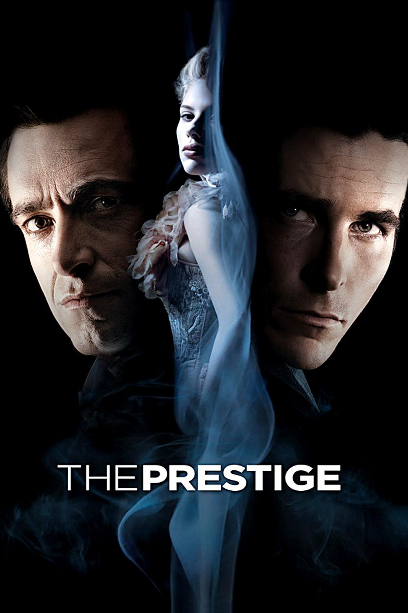

Престиж Prestige

«Ты внимательно смотришь?» Сложную историю противостояния двух величайших фокусников – талантливого Альфреда Бордена и эффектного Роберта Энджера – из малейших
нюансов соткал и преподнёс на суд читателей мистер Кристофер Прист, впоследствии доверивший экранизацию столь таинственного романа своему тёзке – режиссёру Кристоферу Нолану, ранее отличившемуся
любопытным фильмом «Помни».
Кристофер Нолан полностью оправдал кредит доверия, сняв сумрачную историю, окутанную чарами обаяния различных актёров, сумевших отлично передать сущность своих героев. Обаяние настолько в фильме сильное и мощное,
что с косточками поглощает неподготовленного к атаке зрителя. Обаяние жёсткости, всесильной решимости и горькой ироничности Альфреда Бордена в мастерском исполнении Кристиана Бейла незримыми оковами
опутывает зрителя. Обаяние стремления к лучшим результатам, некоей растерянности и трогательной хромоты Роберта Энджера, интересно сыгранного
Хью Джекмэном, вынуждает зрителя не отрываться от лицезрения битвы двух по-своему волевых и не сдающихся никогда и ни за что фокусников, секрет каждого из которых – в глубине сердца, секрет не удачно подобранного
и разработанного представления, но секрет души. Их перекрёстное обаяние одними штрихами и нюансами перекрывает обаяние общего знакомого, что в пору их юности одарил их несколькими важными уроками профессии фокусника – Каттер,
который безупречен в лице сэра Майкла Кейна, невозмутимо застилает наш разум, ловко и непостижимо наше внимание отвлекая от действительно центрального элемента разгадки престижа м-ра Бордена. Кстати,
ведь именно Каттер в начале фильма произносит ставшую ныне знаменательной речь о сущности и всемогуществе престижа любого фокусника. Безусловно, обаяние рока и фатальности Оливии Уэнскомб, которую сносно и терпимо
изобразила в фильме Скарлетт Йоханссон, придаёт «Престижу» свою щепотку шарма, женского шарма, в котором, наверное, нуждается любой фильм, претендующий на звание идеального. Приятно завершает расправу
над умирающим от восхищения зрителем холодно обаятельный Никола Тесла в удивительном появлении певца Дэвида Боуи, а также колоритный и незабываемый слуга Тесла – настороженный кошатник Элли, мистично
смотрящийся из-за забавной внешности Энди Серкиса, в котором узнаётся бывший Горлум из «Властелина Колец».
«Престиж» - это море обаяния, искусно сплетённое в гущу приключений рыщущего в неистовом гневе Роберта Энджера, в то время как широкая улыбка
Альфреда Бордена готова пронзить насквозь чьё-то сердце… И победа не за ними – двумя противоборствующими фокусниками, а за тем, кто их когда-то всему этому научил – за стариком Каттером. Стариком,
выучившим двух великих людей, чтобы один из них пал позорной смертью, а второй изобрёл немыслимый престиж, теша самолюбие своего учителя, такого циничного и всегда спокойного… Истинный убийца кроется в тени. В тени своего эгоизма.
Возможно, легко найдутся несогласные с мнением рецензента, тычущие в книжку мистера Приста, но всё-таки и это мнение не лишено смысла. Ведь каждый из нас волен интерпретировать по-своему эту историю, столь сгущённую красками магии
и обыденности, что непонятно, где чьё величие, простой верёвки, с завидной постоянностью обрывающей чужие жизни, или же престижа, дарящего девочке чудный-чудный финал, в котором все фокусы заканчиваются хорошо…
«Престиж» - это фильм, который смущает, обманывает, искушает, очаровывает. Испытывает. Убивает.